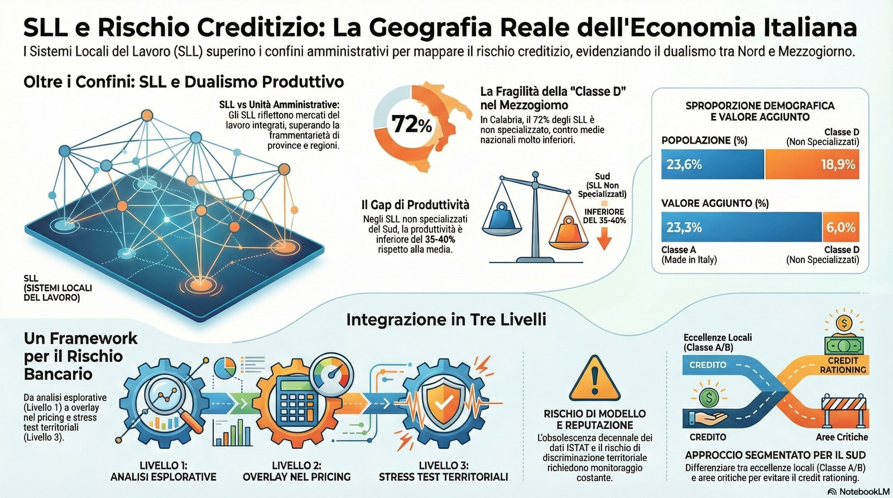

Utilizzo dei Sistemi Locali del Lavoro (SLL) in Ambito Bancario
Paolo Volterra ![]()
Lo studio ISTAT sui Sistemi Locali del Lavoro (SLL) fornisce una mappatura completa e aggiornata della specializzazione produttiva del territorio italiano, classificando i 515 SLL in quattro macro-classi e 17 gruppi. Questo strumento rappresenta una fonte informativa strategica per il sistema bancario, consentendo analisi territoriali approfondite per la gestione del rischio creditizio, la pianificazione commerciale e lo sviluppo di prodotti finanziari mirati.
Istat, SLL
1 Documento di riferimento
Titolo: La specializzazione produttiva prevalente dei Sistemi locali del lavoro – Anno 2021
Fonte: ISTAT - Statistica Focus (12 febbraio 2026)
Copertura: 515 Sistemi Locali del Lavoro in Italia
Anno di riferimento: 2021

2 2. CLASSIFICAZIONE DEI SISTEMI LOCALI DEL LAVORO
2.1 2.1 Le quattro macro-classi
2.1.1 Classe A - SL del “Made in Italy” (156 sistemi, 30,3% del totale)
- Popolazione: 23,6% della popolazione italiana (circa 14 milioni di persone)
- Superficie: 28,4% del territorio nazionale
- Valore aggiunto: 23,3% del totale Industria e Servizi
- Produttività media: 53 mila euro per addetto
- Settori prevalenti:
- Agro-alimentare (37 SL)
- Tessile e abbigliamento (16 SL)
- Pelli, cuoio e calzature (26 SL)
- Legno e mobili (25 SL)
- Gioielli, occhiali e strumenti musicali (8 SL)
- Fabbricazione di macchine e apparecchiature elettriche (24 SL)
- Distribuzione geografica: Centro-Nord (valore aggiunto per addetto: 34,5 mila euro nel Mezzogiorno vs 53 mila euro nel Centro-Nord)
2.1.2 Classe B - SL manifatturieri dell’industria pesante (111 sistemi, 21,6%)
- Popolazione: 25,6% della popolazione
- Addetti: 26,5% degli addetti totali
- Settori prevalenti:
- Fabbricazione di mezzi di trasporto (23 SL)
- Produzione e lavorazione dei metalli (20 SL)
- Materiali da costruzione e ceramica (23 SL)
- Chimica, plastica e farmaceutica (21 SL)
- Carta e editoria (7 SL)
- Porti e cantieri navali (17 SL)
- Caratteristiche: Maggiore dimensione media delle unità locali, densità abitativa e imprenditoriale più elevate nel Mezzogiorno
2.1.3 Classe C - SL non manifatturieri (124 sistemi, 24,1%)
- Popolazione: 38,8% (circa 23 milioni di abitanti)
- Gruppi:
- C1: SL urbani ad alta specializzazione (8 SL) - produttività 68,3 mila euro/addetto
- C2: SL urbani pluri-specializzati (15 SL) - produttività 57,3 mila euro/addetto
- C3: SL urbani non specializzati (16 SL) - produttività 43,2 mila euro/addetto
- C4: SL turistici (85 SL) - produttività 43,1 mila euro/addetto
- Caratteristiche: Presenza di grandi città, elevata densità abitativa (317,9 abitanti/km² al Centro-Nord)
2.1.4 Classe D - SL non specializzati (124 sistemi, 24,1%)
- Caratteristiche: 50 mila abitanti o meno, nessuna specializzazione produttiva rilevante
- Distribuzione: Prevalentemente Mezzogiorno (26 in Calabria, 40 in Sicilia)
- Produttività: Molto limitata - 18,9% degli addetti, solo il 6,0% del valore aggiunto complessivo
3 CENTRO-NORD (tabella ruotata)
| Indicatore | A – Made in Italy | B – Industria pesante | C – Non manifatturieri | D – Non specializzati |
|---|---|---|---|---|
| N. SL | 156 (prevalenti qui) | 111 | 124 | marginali |
| Peso demografico | 23,6% nazionale | 25,6% nazionale | 38,8% nazionale | n.d. |
| Peso economico | 23,3% VA Industria+Servizi | 26,5% addetti | n.d. | n.d. |
| Produttività | 53.000 € / addetto | n.d. | fino a 68.300 € (C1) | bassa |
| Caratteristiche | Manifattura tradizionale specializzata | Poli industriali strutturati | Grandi città; alta densità (317,9 ab/km²) | Residuali |
Osservazione strutturale: nel Centro-Nord si concentra la parte ad alta produttività (Classe A e C1/C2). Il sistema appare più diversificato e con maggiore intensità di valore aggiunto per addetto.
4 MEZZOGIORNO (tabella ruotata)
| Indicatore | A – Made in Italy | B – Industria pesante | C – Non manifatturieri | D – Non specializzati |
|---|---|---|---|---|
| N. SL | presenti | presenti | presenti | 26 Calabria; 40 Sicilia |
| Peso demografico | incluso nel 23,6% nazionale | incluso nel 25,6% nazionale | incluso nel 38,8% nazionale | n.d. |
| Peso economico | incluso nel 23,3% VA | incluso nel 26,5% addetti | n.d. | 6,0% VA totale |
| Produttività | 34.500 € / addetto | n.d. | 43.100–57.300 € | molto bassa |
| Caratteristiche | Gap −18.500 € vs CN (≈ −35%) | Densità imprenditoriale relativamente più elevata | Urbanità meno polarizzata | Sistemi <50.000 abitanti; assenza specializzazione |
Osservazione strutturale: nel Mezzogiorno si concentra la Classe D e si registra un evidente divario di produttività nella Classe A (−18.500 € per addetto rispetto al Centro-Nord, pari a circa −35%).
Codice
import pandas as pd
df = pd.read_csv("../OUT/data/istat_sll2021_classificazione.csv")
df.groupby(['den_classe', 'den_gruppo'])['pop_2021_12_31'].sum().reset_index()| den_classe | den_gruppo | pop_2021_12_31 | |
|---|---|---|---|
| 0 | SL del "Made in Italy" | Sistemi locali dei gioielli, degli occhiali e ... | 787273 |
| 1 | SL del "Made in Italy" | Sistemi locali del legno e dei mobili | 2289587 |
| 2 | SL del "Made in Italy" | Sistemi locali del tessile e dell'abbigliamento | 2087831 |
| 3 | SL del "Made in Italy" | Sistemi locali dell'agro-alimentare | 3407614 |
| 4 | SL del "Made in Italy" | Sistemi locali della fabbricazione di macchine... | 2786382 |
| 5 | SL del "Made in Italy" | Sistemi locali delle pelli, cuoio e calzature | 2565195 |
| 6 | SL manifatturieri dell'industria pesante | Sistemi locali dei materiali da costruzione e ... | 1239573 |
| 7 | SL manifatturieri dell'industria pesante | Sistemi locali della carta e dell'editoria | 553176 |
| 8 | SL manifatturieri dell'industria pesante | Sistemi locali della chimica, plastica e farma... | 2784818 |
| 9 | SL manifatturieri dell'industria pesante | Sistemi locali della fabbricazione di mezzi di... | 3935584 |
| 10 | SL manifatturieri dell'industria pesante | Sistemi locali della produzione e lavorazione ... | 2233035 |
| 11 | SL manifatturieri dell'industria pesante | Sistemi locali portuali e dei cantieri navali | 6175608 |
| 12 | SL non manifatturieri | Sistemi locali turistici | 2679855 |
| 13 | SL non manifatturieri | Sistemi locali urbani ad alta specializzazione | 9737866 |
| 14 | SL non manifatturieri | Sistemi locali urbani non specializzati | 3942835 |
| 15 | SL non manifatturieri | Sistemi locali urbani pluri-specializzati | 6530925 |
| 16 | SL non manifatturieri | sistemi locali turistici | 18817 |
| 17 | SL non specializzati | Sistemi locali non specializzati | 5274159 |
5 APPLICAZIONI BANCARIE DELLO STUDIO ISTAT
5.1 GESTIONE DEL RISCHIO CREDITIZIO
5.1.1 A. Analisi del rischio di concentrazione settoriale e territoriale
Caso d’uso: Una banca con forte presenza in Veneto e Friuli-Venezia Giulia analizza il proprio portafoglio crediti alle PMI.
Utilizzo dei dati SLL: - Identificare i territori del “triangolo del salotto” (SL del legno e dei mobili in Puglia e Basilicata) per valutare l’esposizione creditizia verso questo specifico cluster produttivo - Verificare la concentrazione su settori del Made in Italy (tessile, abbigliamento) che rappresentano il 7,8% degli addetti in questi territori - Mappare l’esposizione verso SL con produttività inferiore alla media (es. 41mila euro per addetto nel tessile/abbigliamento vs 53mila euro media Made in Italy)
Metriche chiave da monitorare: - Densità imprenditoriale (unità locali per km²): indicatore di vivacità economica del territorio - Dimensione media delle unità locali (addetti/unità locali): proxy della solidità delle imprese - Produttività del lavoro: capacità di generare valore aggiunto - Distribuzione Centro-Nord/Mezzogiorno: differenziali significativi di performance economica
5.1.2 B. Valutazione del merito creditizio territoriale
Esempio pratico: Richiesta di finanziamento da parte di un’impresa manifatturiera a Faenza (Emilia-Romagna).
Analisi tramite SLL: - Faenza appartiene al gruppo dei materiali da costruzione e ceramica (classe B3) - Produttività del lavoro: 57,3 mila euro per addetto (superiore alla media nazionale) - Densità abitativa: 86,3 abitanti/km² (indicatore di urbanizzazione moderata) - Specializzazione consolidata in produzioni artigianali di alta qualità (ceramica di Faenza)
Valutazione creditizia: - ✅ Territorio con specializzazione produttiva consolidata - ✅ Produttività superiore alla media del comparto manifatturiero pesante - ✅ Presenza di cluster industriale con tradizione storica - ⚠️ Monitorare la dipendenza da singoli settori/mercati
5.1.3 C. Stress test settoriali e territoriali
Scenario: Crisi del settore turistico (come durante COVID-19)
Utilizzo dei dati SLL: - Identificare i 85 SL turistici (classe C4) che rappresentano il 3,8% del valore aggiunto - Mappare le aree a maggior rischio: zone costiere al meridione, Trentino-Alto Adige, località alpine - Valutare l’esposizione del portafoglio crediti verso questi territori - Stimare l’impatto su 2,7 milioni di abitanti (4,6% della popolazione nazionale)
Azioni mitiganti: - Diversificazione territoriale dei nuovi impieghi - Accantonamenti prudenziali su crediti concentrati in SL turistici - Rimodulazione dei limiti di esposizione per cluster produttivi vulnerabili
5.2 PIANIFICAZIONE COMMERCIALE E SVILUPPO RETE
5.2.1 A. Identificazione di territori ad alto potenziale
Caso d’uso: Una banca pianifica l’apertura di nuovi sportelli o il rafforzamento della presenza territoriale.
Criteri di selezione basati su SLL:
- SL urbani ad alta specializzazione (C1 - 8 territori)
- Produttività: 68,3 mila euro per addetto (la più alta)
- Densità imprenditoriale: 82,6 unità locali per km²
- Settori: ICT, Ricerca & Sviluppo, Telecomunicazioni
- Target clientela: Imprese innovative, start-up, professionisti ad alto reddito
- Prodotti suggeriti: Finanziamenti per R&D, venture capital, servizi di corporate banking
- SL del Made in Italy con alta produttività
- Es. Fabbricazione di macchine e apparecchiature elettriche (Emilia-Romagna, Piemonte, Veneto)
- Produttività: oltre 40 mila euro per addetto
- Target clientela: PMI manifatturiere export-oriented
- Prodotti suggeriti: Finanza d’impresa, servizi di trade finance, coperture cambi
- SL manifatturieri dell’industria pesante con vocazione territoriale consolidata
- Es. Porti e cantieri navali di Gioia Tauro e Reggio Calabria
- Target clientela: Grandi imprese, indotto della logistica
- Prodotti suggeriti: Credito a medio-lungo termine, leasing operativo, garanzie
5.2.2 B. Segmentazione territoriale della clientela
Strategia: Personalizzare l’offerta in base alla specializzazione produttiva del territorio.
Esempi:
| Territorio | Specializzazione | Prodotti bancari prioritari |
|---|---|---|
| Brianza (Lombardia) | Legno e mobili, macchine (Made in Italy gruppo A6) | Credito agrario, finanziamenti per macchinari, factoring per dilazioni pagamento |
| Emilia-Romagna | Mezzi di trasporto, meccanica (Industria pesante B1) | Project financing, leasing industriale, credito export |
| Toscana centrale | Pelli, cuoio e calzature (Made in Italy gruppo A3) | Anticipo fatture, finanziamenti stagionali, crediti per export moda |
| Milano, Roma, Bologna | Urbani ad alta specializzazione (C1) | Mutui residenziali premium, gestione patrimoniale, servizi digitali |
| Sardegna costiera | Turistici (C4) | Credito stagionale, finanziamenti per ristrutturazioni, POS e servizi di pagamento |
5.3 SVILUPPO PRODOTTI E SERVIZI DEDICATI
5.3.1 A. Prodotti settoriali “verticali”
Esempio 1: “Prestito Made in Italy” - Target: Imprese dei 156 SL Made in Italy - Caratteristiche: - Tassi agevolati per investimenti in digitalizzazione e sostenibilità - Importi fino a 500.000 euro - Priorità a territori con produttività superiore a 40 mila euro/addetto - Territori prioritari: Centro-Nord (produttività 34,5 mila euro Mezzogiorno vs 53 mila Centro-Nord)
Esempio 2: “Finanziamento Industria 4.0 per SL manifatturieri pesanti” - Target: Imprese dei 111 SL manifatturieri industria pesante (classe B) - Caratteristiche: - Finanziamenti per automazione, robotica, intelligenza artificiale - Periodi di ammortamento lunghi (fino a 10 anni) - Affiancamento consulenziale per transizione digitale - Focus geografico: SL con dimensione media unità locali elevata (proxy di imprese strutturate)
5.3.2 B. Prodotti territoriali “orizzontali”
Esempio: “Sostegno SL non specializzati” - Target: 124 SL non specializzati (classe D), prevalentemente Mezzogiorno - Razionale: Territori con bassa produttività (6,0% valore aggiunto, 18,9% addetti) necessitano di supporto per sviluppo economico - Caratteristiche: - Microcredito per avvio attività - Garanzie pubbliche (es. Fondo di Garanzia PMI) - Tassi calmierati con contributo di enti locali/regionali - Formazione imprenditoriale inclusa
5.4 ANALISI COMPARATIVA E BENCHMARKING
5.4.1 A. Confronto performance territoriali
Utilizzo delle tabelle comparative dello studio ISTAT:
| Indicatore | Centro-Nord | Mezzogiorno | Differenziale |
|---|---|---|---|
| Densità abitativa (ab/km²) - Made in Italy | 182,1 | 122,7 | +48% |
| Densità imprenditoriale (UL/km²) - Made in Italy | 16,5 | 9,0 | +83% |
| Produttività (k€/addetto) - Made in Italy | 53,0 | 34,5 | +54% |
| Densità abitativa - Manifatturieri pesanti | 185,3 | 304,5 | -39% |
| Produttività - Manifatturieri pesanti | 53,3 | 41,3 | +29% |
Implicazioni per la banca: - Pricing differenziato: Tassi più competitivi per territori ad alta produttività - Limiti di esposizione: Maggiore prudenza su territori Mezzogiorno con produttività inferiore - Strategia di diversificazione: Bilanciare portafoglio tra Centro-Nord e Sud
5.4.2 B. Identificazione di outlier positivi e negativi
Outlier positivi (opportunità): - Avezzano (Abruzzo): SL del Made in Italy (fabbricazione macchine) con produttività elevata nonostante localizzazione nel Mezzogiorno - SL della chimica, plastica e farmaceutica al Sud: Battipaglia, Milazzo, Gela, Siracusa - produttività e dimensione media unità locali superiori alla media
Outlier negativi (rischi): - SL non specializzati con densità abitativa bassissima: Mezzogiorno - 80,6 ab/km² vs 93,4 Centro-Nord - SL turistici con alta stagionalità: rischio di flussi di cassa discontinui
5.5 SUPPORTO ALLA DUE DILIGENCE E M&A
5.5.1 Caso d’uso: Una banca supporta un cliente nell’acquisizione di un’impresa nel settore tessile/abbigliamento in Veneto.
Analisi territoriale tramite SLL:
- Identificazione del SL di riferimento
- Verifica se il SL appartiene al gruppo A2 (tessile e abbigliamento) - 16 SL in Italia
- Localizzazione: Centro-Nord (densità abitativa 291,8 ab/km², imprenditoriale 24,4 UL/km²)
- Benchmarking produttività
- Produttività del lavoro gruppo A2: 50,1 mila euro per addetto
- Confronto con target di acquisizione: se significativamente inferiore, richiede approfondimenti
- Analisi del cluster industriale
- Presenza di fornitori e clienti nel territorio (indotto)
- Dimensione media unità locali: 4,2 addetti (indicatore di frammentazione settore)
- Quota valore aggiunto: 2,2% del totale industria e servizi
- Valutazione rischi specifici
- Produttività inferiore alla media Made in Italy (50,1 vs 53,0 mila euro)
- Settore maturo con pressione competitiva da paesi low-cost
- Necessità di investimenti in digitalizzazione e automazione
Output per il cliente: - Valutazione economica: Stima del valore equo basata su multipli di settore e territorio - Piano di integrazione: Sinergie con altre imprese del cluster - Finanziabilità dell’operazione: Struttura di finanziamento ottimale
5.6 GESTIONE DELLE CRISI E WORKOUT
5.6.1 Scenario: Un’impresa in difficoltà finanziaria opera nel settore dei materiali da costruzione in Calabria.
Analisi tramite SLL:
- Contestualizzazione territoriale
- Verifica appartenenza al gruppo B3 (materiali costruzione e ceramica)
- Calabria: presenza limitata di SL manifatturieri (prevalenza SL non specializzati classe D)
- Produttività Mezzogiorno gruppo B3: significativamente inferiore al Centro-Nord
- Valutazione prospettive di recupero
- ❌ Territorio con bassa densità imprenditoriale (poche opportunità di cessione/aggregazione)
- ❌ Produttività inferiore alla media (difficoltà di turnaround)
- ✅ Eventuale specializzazione locale (es. ceramica di Squillace) può rappresentare un valore
- Strategie di workout
- Opzione A - Ristrutturazione in loco: Se l’impresa ha un posizionamento competitivo nel cluster locale
- Opzione B - Cessione a competitor Centro-Nord: Se esistono sinergie con acquirenti in territori più produttivi
- Opzione C - Liquidazione: Se non vi sono prospettive di recupero
6 INTEGRAZIONE CON ALTRE FONTI DATI BANCARIE
6.1 Integrazione con Centrale Rischi Banca d’Italia
Valore aggiunto: Combinare i dati SLL con l’andamento creditizio degli affidamenti per territorio e settore.
Analisi possibili: - Correlazione tra produttività del lavoro SLL e tasso di default dei finanziamenti - Identificazione di early warning signals territoriali (es. aumento NPL in specifici SLL) - Ottimizzazione del pricing risk-based per territorio e settore
6.2 Integrazione con Cerved/Crif
Valore aggiunto: Arricchire il profilo delle imprese con la dimensione territoriale-settoriale SLL.
Esempi: - Score creditizio differenziato per SLL di appartenenza - Benchmark performance economico-finanziarie vs. media SLL - Segnalazioni automatiche per imprese con performance anomale rispetto al territorio
6.3 Integrazione con dati interni (CRM, Data Warehouse)
Dashboard operativa suggerita:
ESPOSIZIONE CREDITIZIA PER MACRO-CLASSE SLL
┌─────────────────────────────────────────────────────────────┐
│ Classe A - Made in Italy │
│ ████████████████████░░░░░░░░ 35% (€1,2 mld) │
│ NPL ratio: 3,2% | Prod. media: 53k€/add | Territori: 156 │
├─────────────────────────────────────────────────────────────┤
│ Classe B - Manifatturieri pesanti │
│ █████████████████░░░░░░░░░░░░ 28% (€950 mln) │
│ NPL ratio: 2,8% | Prod. media: 50k€/add | Territori: 111 │
├─────────────────────────────────────────────────────────────┤
│ Classe C - Non manifatturieri │
│ ████████████████░░░░░░░░░░░░░ 25% (€850 mln) │
│ NPL ratio: 2,5% | Prod. media: 55k€/add | Territori: 124 │
├─────────────────────────────────────────────────────────────┤
│ Classe D - Non specializzati │
│ ███████░░░░░░░░░░░░░░░░░░░░░░ 12% (€400 mln) │
│ NPL ratio: 5,1% | Prod. media: 35k€/add | Territori: 124 │
└─────────────────────────────────────────────────────────────┘7 METRICHE E KPI DERIVATI DALL’ANALISI SLL
7.1 KPI per la gestione del rischio
| KPI | Formula | Target | Fonte dato |
|---|---|---|---|
| Indice di concentrazione SLL | HHI su esposizioni per singolo SLL | < 0,15 | Portafoglio crediti + Classificazione ISTAT |
| Tasso di copertura territori ad alta produttività | % impieghi in SLL con produttività > 50k€/add | > 60% | Tabelle ISTAT + Portafoglio crediti |
| Esposizione Mezzogiorno adjusted | (Esposizione Mezz. × Differenziale produttività) / Totale impieghi | < 20% | Tabelle territoriali ISTAT |
| Diversificazione settoriale per macro-classe | Indice di entropia Shannon per le 4 classi SLL | > 1,2 | Classificazione ISTAT |
7.2 KPI per lo sviluppo commerciale
| KPI | Formula | Target | Fonte dato |
|---|---|---|---|
| Market share in SL ad alto potenziale | Impieghi banca / Totale impieghi sistema in SL target | > 15% | ABI + Selezione SL prioritari |
| Copertura territoriale Made in Italy | N° SL Made in Italy con presenza banca / 156 | > 40% | Rete sportelli + Classificazione ISTAT |
| Penetrazione PMI in cluster produttivi | N° clienti PMI in SL specializzati / Totale imprese SL | > 25% | CRM + Dati ISTAT unità locali |
8 CASI D’USO OPERATIVI
8.1 CASO 1: Istruttoria di credito per PMI manifatturiera
Situazione: Richiesta di finanziamento 500.000 euro per investimenti da parte di “Rossi Meccanica Srl” a Reggio Emilia.
Step 1 - Identificazione SL - Reggio Emilia appartiene a un SL della classe B (manifatturieri industria pesante) - Gruppo specifico: B1 - Fabbricazione di mezzi di trasporto
Step 2 - Analisi indicatori territoriali - Produttività del lavoro: 62,7 mila euro/addetto (superiore alla media nazionale 50k€) - Densità imprenditoriale: 4,2 UL/km² (elevata) - Dimensione media UL: 4,2 addetti (settore con piccole imprese specializzate)
Step 3 - Benchmark aziendale vs SL - Fatturato per dipendente Rossi Meccanica: 180.000 euro - Valore aggiunto per addetto: 65.000 euro ✅ (> media SL) - Marginalità: 8,5% ✅ (in linea con settore)
Step 4 - Valutazione rischio - ✅ Territorio con specializzazione consolidata e alta produttività - ✅ Performance aziendali superiori alla media SL - ✅ Settore con prospettive positive (automotive, meccatronica) - ⚠️ Monitorare dipendenza da grandi clienti OEM
Decisione: APPROVATO - Tasso BCe + spread 180 bp (in linea con rating B+)
8.2 CASO 2: Pianificazione apertura nuova filiale
Situazione: La banca valuta l’apertura di una nuova filiale in Abruzzo.
Step 1 - Screening SL abruzzesi - Identificazione SL per classe: - Classe A (Made in Italy): Avezzano (A6 - macchine e apparecchiature) - Classe B: nessuno - Classe C: L’Aquila (C3 - urbano non specializzato) - Classe D: vari SL montani non specializzati
Step 2 - Analisi comparativa
| SL | Popolazione | Produttività (k€/add) | Densità impr. (UL/km²) | Vocazione |
|---|---|---|---|---|
| Avezzano | ~70.000 | 55,2 | 14,4 | Meccanica |
| L’Aquila | ~73.000 | 44,0 | 8,9 | Servizi/PA |
| Teramo costa | ~85.000 | 39,7 | 12,6 | Turistico |
Step 3 - Analisi potenziale commerciale - Avezzano: ✅ Alta produttività, vocazione industriale, presenza PMI strutturate → Target: corporate banking - L’Aquila: ⚠️ Produttività media, dipendenza da PA, post-terremoto → Target: retail, mutui ricostruzione - Teramo costa: ⚠️ Stagionalità turistica, produttività inferiore → Target: retail, credito al consumo
Decisione: Avezzano prioritario - Posizionamento su PMI manifatturiere export-oriented
8.3 CASO 3: Gestione NPL e ristrutturazioni
Situazione: Portafoglio NPL (Non-Performing Loans) della banca con concentrazione in SL turistici post-COVID.
Step 1 - Mappatura NPL per classe SLL - Classe A (Made in Italy): 2,8% NPL ratio ✅ - Classe B (Manifatturieri pesanti): 2,5% NPL ratio ✅ - Classe C (Non manifatturieri): 4,2% NPL ratio ⚠️ - Di cui C4 (Turistici): 7,8% NPL ratio ❌ - Classe D (Non specializzati): 5,1% NPL ratio ⚠️
Step 2 - Analisi territoriale NPL turistici - 85 SL turistici interessati - Concentrazione: Sardegna, località alpine, coste meridionali - Produttività pre-crisi: 43,1 mila euro/addetto (già inferiore alla media) - Produttività post-COVID: stimata -35% → circa 28 mila euro/addetto
Step 3 - Strategie di workout
Opzione A - Ristrutturazione (territori vocati) - Target: SL turistici con forte vocazione (es. Dolomiti, Costa Smeralda) - Condizioni: allungamento scadenze, moratoria interessi, covenant meno stringenti - Razionale: domanda turistica in ripresa, asset immobiliari di valore
Opzione B - Cessione NPL (territori marginali) - Target: SL turistici marginali con produttività < 30k€/addetto - Modalità: cessione a servicer specializzati o fondi distressed - Razionale: basse prospettive di recupero, liberazione capitale
Opzione C - Conversione debt-to-equity - Target: strutture turistiche di pregio in SL ad alta vocazione - Modalità: acquisizione asset, successiva valorizzazione e cessione - Razionale: recupero valore superiore rispetto a liquidazione
Risultato atteso: Riduzione NPL ratio classe C4 dal 7,8% al 4,5% in 24 mesi.
9 LIMITI E CAUTELE NELL’UTILIZZO DEI DATI SLL
9.1 Limiti metodologici
- Riferimento temporale: Dati riferiti al 2021 - necessario aggiornamento con trend più recenti
- Aggregazione territoriale: I SLL non coincidono con confini amministrativi (province, comuni)
- Specializzazione prevalente: Un SL può avere economie diversificate oltre alla specializzazione principale
- Medie territoriali: Eterogeneità interna al singolo SL non rilevata
9.2 Necessità di integrazione
I dati SLL NON sostituiscono ma integrano le analisi creditizie tradizionali:
- ✅ Utilizzare SLL per analisi territoriale e settoriale
- ✅ Combinare con analisi bilancio, centrale rischi, score creditizio
- ✅ Contestualizzare performance aziendale rispetto al territorio
- ❌ Non utilizzare come unico criterio decisionale
- ❌ Non ignorare specificità della singola impresa
9.3 Aggiornamento e monitoraggio
Raccomandazioni: - Aggiornare annualmente la classificazione SLL con nuove statistiche ISTAT - Monitorare variazioni significative di produttività e specializzazione - Integrare con dati congiunturali (indici di fiducia, ordini, fatturato) - Utilizzare fonti locali (Camere di Commercio, associazioni di categoria) per approfondimenti
10 IMPLEMENTAZIONE IN BANCA: ROADMAP
10.1 Fase 1: Assessment (Mese 1-2)
Acquisizione dati ISTAT SLL completi (file dataset)
Mappatura portafoglio crediti su classificazione SLL
Analisi gap tra esposizione attuale e target strategici
Identificazione quick wins (es. territori da presidiare)
10.2 Fase 2: Integrazione sistemi (Mese 3-4)
Caricamento classificazione SLL in Data Warehouse
Join con anagrafica imprese (via codice comune/località)
Sviluppo dashboard direzionali Power BI / Tableau
Integrazione in strumenti istruttoria crediti
10.3 Fase 3: Processi e governance (Mese 5-6)
Aggiornamento policy creditizie con criteri SLL
Formazione gestore/credito su utilizzo dati SLL
Definizione KPI e reporting per Comitato Rischi
Creazione playbook operativi per casistiche ricorrenti
10.4 Fase 4: Sviluppo commerciale (Mese 7-12)
Segmentazione clientela attuale per SLL
Sviluppo prodotti verticali per specializzazioni produttive
Campagne marketing territoriali mirate
Pianificazione rete commerciale con criteri SLL
11 CONCLUSIONI
Lo studio ISTAT sui Sistemi Locali del Lavoro rappresenta uno strumento strategico fondamentale per il sistema bancario italiano, offrendo una mappatura granulare e aggiornata delle specializzazioni produttive territoriali.
11.1 Vantaggi principali per la banca:
- Gestione rischio più efficace: Identificazione e mitigazione di concentrazioni settoriali e territoriali
- Pricing più accurato: Differenziazione tassi in base a produttività e solidità territoriale
- Sviluppo commerciale mirato: Presidio di territori ad alto potenziale, prodotti verticali dedicati
- Due diligence territoriale: Valutazione contesto economico per M&A, nuove filiali, partnership
- Supporto alla clientela: Consulenza qualificata su trend territoriali e opportunità di sviluppo
11.2 Fattori critici di successo:
- ✅ Integrazione con sistemi informativi bancari esistenti
- ✅ Formazione del personale commerciale e creditizio
- ✅ Aggiornamento periodico dei dati e monitoraggio trend
- ✅ Combinazione con altre fonti informative (Centrale Rischi, bilanci, rating)
- ✅ Approccio pragmatico: utilizzare SLL come supporto decisionale, non come criterio esclusivo
12 ALLEGATI E RIFERIMENTI
12.1 Fonti dati ISTAT
- Portale ISTAT: https://www.istat.it/
- Sezione Sistemi Locali del Lavoro: https://www.istat.it/it/archivio/156224
- Dataset completo: https://www.istat.it/wp-content/uploads/2025/10/FocusSLL2021.pdf
- Sistema Informativo Territoriale (SITUAS): https://situas.istat.it/web/#/home
12.2 Altre fonti utili
- Banca d’Italia - Economie regionali: https://www.bancaditalia.it/pubblicazioni/economie-regionali/
- Cerved - Rapporti settoriali e territoriali
- Unioncamere - Osservatori economici territoriali
- OECD - Regional statistics
12.3 Contatti ISTAT per approfondimenti
- Sandro Cruciani: sandro.cruciani@istat.it
- Daniela Ichim: daniela.ichim@istat.it
- Marianna Mantuano: marianna.mantuano@istat.it
Documento redatto il: 14 febbraio 2026 Prossimo aggiornamento: Febbraio 2027 (in seguito a pubblicazione nuovi dati ISTAT) Versione: 1.0